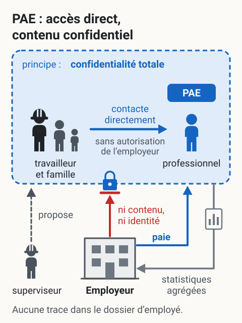
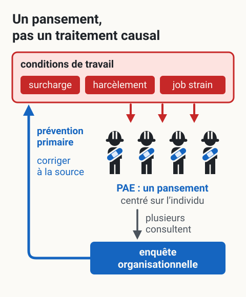

Le programme d'aide aux employés (PAE)
L'essentiel : Le PAE est un service confidentiel offert par l'employeur qui permet aux travailleurs et à leur famille de consulter gratuitement un professionnel (psychologue, travailleur social, conseiller financier ou juridique) pour un nombre limité de séances. L'employeur paie mais n'a aucun accès au contenu des consultations. C'est l'outil de référence en prévention tertiaire, mais il a des limites importantes : il intervient quand le problème est déjà là, et il ne change rien aux conditions de travail qui peuvent l'avoir causé.
Définition
Programme d'aide aux employés (PAE) : service de soutien psychosocial, juridique, financier ou en mode de vie offert par un employeur à ses travailleurs (et souvent à leur conjoint et enfants), généralement par l'intermédiaire d'un fournisseur externe. Aussi appelé PAEF (Programme d'aide aux employés et à leur famille).
Le principe fondamental : confidentialité totale entre le travailleur et le prestataire. L'employeur paie le service global, reçoit des rapports statistiques agrégés (nombre d'utilisations, types de services), mais n'a aucun accès au contenu des consultations ni à l'identité des utilisateurs.
Pour un superviseur en mine : c'est un outil que tu peux proposer sans avoir à connaître les détails de la situation du travailleur. C'est aussi un moyen d'aider sans franchir la limite de ton rôle.


Toucher l'image pour l'agrandirPrincipe décrit par cette page : le travailleur contacte directement le PAE, sans autorisation de l’employeur ; l’employeur paie le service global et reçoit des rapports statistiques agrégés, sans accès au contenu des consultations ni à l’identité des utilisateurs. La page nuance : en petit camp ou petite équipe, un long appel personnel peut être remarqué, d’où la nécessité d’un espace privé.
D’après cette page (Définition, Comment ça fonctionne, Application en mines, Comment référer un travailleur). Voir aussi Coordination avec le médecin traitant et le PAE et Lignes d’aide et ressources de soutien. Schéma de principe : la feuille de barres ne porte aucune valeur.
Comment ça fonctionne
| Étape | Détail |
|---|---|
| 1. Accès | Le travailleur contacte directement le PAE (ligne 24/7 généralement). Aucune autorisation employeur requise. |
| 2. Évaluation | Court entretien téléphonique pour évaluer le besoin et orienter vers le bon professionnel. |
| 3. Sessions | Généralement 3 à 12 séances (source à préciser) selon le contrat employeur, en personne, par téléphone ou en vidéoconférence. |
| 4. Suivi | Si le besoin dépasse les séances PAE, référence vers ressources externes (RAMQ, assurance privée, services publics). |
| 5. Confidentialité | Aucune trace dans le dossier d'employé. L'employeur n'a pas accès à l'identité des utilisateurs, mais en petit camp ou petite équipe, un long appel personnel peut être remarqué. |
Coût pour le travailleur : zéro pour les séances couvertes par le contrat. Si dépassement : référence ou frais privés.
Coût pour l'employeur : généralement 30 $ à 150 $ par travailleur par année (source à préciser) selon le niveau de service contracté.
Services offerts
Les PAE modernes couvrent généralement
| Catégorie | Services |
|---|---|
| Psychologique | Anxiété, dépression, deuil, stress, MBI, épuisement professionnel, relations interpersonnelles, dépendances |
| Familial | Couple, parentalité, garde d'enfants, soins aux aînés |
| Juridique | Droit familial, droit du travail (limité), succession, testament, immigration |
| Financier | Budget, dettes, planification, faillite |
| Mode de vie | Nutrition, activité physique, gestion du sommeil, gestion du temps |
| Crise | Ligne 24/7 (idées suicidaires, violence, crise), mais le PAE n'est pas un service d'urgence : en cas d'urgence ou de crise, 9-1-1, Info-Social 811 ou 1-866-APPELLE |
Certains PAE spécialisés en milieu industriel ou minier offrent aussi : counseling pour travailleurs FIFO, soutien post-incident grave, intervention de groupe après événement traumatique.
Application en mines
Particularités d'un PAE en milieu minier
| Enjeu | Implication |
|---|---|
| Rotation FIFO | Le travailleur peut être à 1500 km (source à préciser) de son PAE local. Le service doit être accessible par téléphone et vidéoconférence. |
| Connectivité en camp | Les sites éloignés ont parfois une bande passante insuffisante. À planifier avec le fournisseur PAE. |
| Confidentialité réelle | En petit camp ou petite équipe, un travailleur qui « passe un appel personnel long » peut être remarqué. Espace privé requis. |
| Culture du tough guy | Stigmatisation à briser activement. La direction doit normaliser l'utilisation. |
| Présence sur place | Certains employeurs miniers offrent des journées de présence d'un intervenant en camp (très efficace). |
Profils d'utilisation typique en mine FIFO
- Travailleur en début de rotation difficile (séparation famille)
- Travailleur après incident significatif (accident, mort d'un collègue, presque-incident)
- Travailleur en surcharge persistante
- Conjoint à domicile (le PAE familial est souvent sous-utilisé)
Comment référer un travailleur
- « Je vois que t'as une période difficile. As-tu pensé à appeler le PAE? Ça peut aider d'avoir quelqu'un de neutre à qui parler. »
- « C'est gratuit, c'est confidentiel, et l'employeur ne reçoit pas ton nom. »
- « Ton conjoint et tes enfants y ont droit aussi, pas juste toi. »
- « Le numéro est sur ta carte d'assurance, sur le babillard, et au bureau du surintendant. »
- Forcer un travailleur à appeler le PAE
- Promettre un résultat (« ils vont régler ton problème »)
- Diagnostiquer (« t'as besoin du PAE pour ta dépression »)
- Demander si le travailleur a effectivement appelé (briser la confidentialité présumée)
- Présenter le PAE comme « la solution » à un problème organisationnel
Procédure recommandée
- Conversation informelle, écoute, validation
- Mention du PAE comme option parmi d'autres
- Donner le numéro de téléphone (toujours l'avoir sur soi)
- Faire un suivi quelques jours plus tard sur le bien-être, pas sur l'utilisation du PAE
- Si la situation peut concerner la SST (ex. travailleur qui s'isole et opère de la machinerie), documenter factuellement
Limites du PAE
Le PAE intervient quand le problème individuel est déjà installé. Il ne change rien aux conditions de travail qui ont contribué au problème. Si une équipe entière commence à utiliser le PAE pour des raisons liées au travail (job strain, harcèlement, surcharge), le problème est organisationnel, pas individuel. Le PAE est un pansement, pas un traitement causal.
| Limite | Conséquence |
|---|---|
| Nombre de séances limité | Insuffisant pour problèmes complexes ou chroniques |
| Centré sur l'individu | Aucune action sur le contexte de travail |
| Sous-utilisation | Taux d'utilisation moyen de 9,2 % dans une étude de 102 organisations canadiennes, calculé de façon très variable d'une organisation à l'autre (Csiernik, 2003) ; les plus à risque consultent rarement |
| Stigmatisation | Crainte du « si on apprend que j'ai appelé » |
| Qualité variable | Selon le fournisseur, les psychologues sont plus ou moins expérimentés en milieu industriel |
| Pas un service d'urgence | Pour crise immédiate : 9-1-1 ou Info-Social 811 |
Indicateurs qu'il faut compléter par autre chose
- Plusieurs travailleurs d'une même équipe consultent → enquête organisationnelle requise
- Taux d'invalidité psychologique en hausse malgré PAE actif → revoir prévention primaire
- Travailleur qui « épuise » ses séances PAE en 2 mois (source à préciser) → besoin de soutien clinique soutenu, référence vers RAMQ ou assurance


Toucher l'image pour l'agrandirLe PAE intervient quand le problème individuel est déjà installé et ne change rien aux conditions de travail qui y ont contribué. Selon cette page, quand une équipe entière l’utilise pour des raisons liées au travail, le problème est organisationnel ; dès que plusieurs travailleurs d’une même équipe consultent, une enquête organisationnelle est requise, et l’employeur reste tenu à la prévention primaire.
D’après cette page (Limites du PAE, Cadre légal). Voir aussi Les trois niveaux de prévention et Intervention organisationnelle vs individuelle. Schéma de principe : le nombre de travailleurs dessinés n’est pas un seuil.
Cadre légal
- Confidentialité : régie par la Loi sur la protection des renseignements personnels dans le secteur privé. L'employeur ne peut pas exiger d'information sur l'utilisation individuelle du PAE.
- LMRSST : la loi ne mentionne pas le PAE. Le programme de prévention doit identifier et analyser les risques, dont les risques psychosociaux (LMRSST, art. 144, qui modifie l'art. 59 de la LSST) ; un PAE peut s'y ajouter comme mesure tertiaire, sans en tenir lieu ni dispenser l'employeur des obligations de prévention primaire (identifier et corriger les RPS à la source).
- Assignation temporaire et retour au travail : le PAE peut soutenir le retour au travail mais ne remplace pas un suivi médical formel.
- Convention collective : dans plusieurs conventions minières, le PAE est mentionné explicitement avec ses paramètres (nombre de séances, accès famille).
- Lien : ⚖️ Index LMRSST, CNESST
Documents et outils
| Document | Type | Source |
|---|---|---|
| Fiche CCHST sur les programmes d'aide aux employés | Fiche gratuite | cchst.ca |
| Modèle de politique PAE pour employeur | Gabarit | À adapter selon convention collective |
| Carte de poche avec coordonnées PAE et lignes d'aide | À créer | Voir 🆘 Lignes d'aide et ressources de soutien |
| Guide de référencement pour superviseurs | À créer en interne | Conseiller SST |
| Affiche de promotion du PAE pour camp et chantier | À créer | Communications internes |
| Liste de fournisseurs PAE actifs au Québec | À tenir à jour | Direction RH |
| EAPA, Employee Assistance Professionals Association | Organisation de référence | eapassn.org |
Voir le centre de ressources : 📁 Documents et outils.
Pour aller plus loin
Références académiques et institutionnelles
- Csiernik, R. (2011). The glass is filling: An examination of employee assistance program evaluations. Employee Assistance Quarterly, 26(3), 178-193.
- INSPQ (2018). Trousse d'outils pour la surveillance de la santé mentale en milieu de travail.
- CCHST (Centre canadien d'hygiène et de sécurité au travail), fiches sur les PAE.
Articles wiki connexes
- 🆘 Lignes d'aide et ressources de soutien : ressources d'urgence complémentaires
Si une situation dépasse le cadre du PAE (urgence, crise) : 9-1-1, Info-Social 811 ou 1-866-APPELLE. Liste complète dans 🆘 Lignes d'aide et ressources de soutien.
Questions sur ta lecture
Ces questions t'aident à retenir l'essentiel. Tu peux relire la page et recommencer autant de fois que tu veux : rien n'est envoyé avant que tu attestes.
Pages qui pointent ici (3)
- Garder le moral Prendre soin de toi
- Où appeler quand ça ne va pas Prendre soin de toi
- Ton retour au travail Retour au travail